Man is the measure of all things; of that which is, that it is; of that which is not, that it is not.
Protagoras (ca. 490–421 BC), in Plato’s Protagoras
Man is also the measurer of all things. Measuring by counting, by adding it all up, by taking stock, is probably as old as any human activity. In recorded history, there are “accounts” on clay tablets from ancient Sumeria dating from ca. 3,700 BC.Gary Giroux, http://acct.tamu.edu/giroux/AncientWorld.html (accessed January 19, 2009). Since the first shepherd counted his sheep, there has been accounting.
In financial planning, assessing the current situation, or figuring out where you are at present, is crucial to determining any sort of financial plan. This assessment becomes the point of departure for any strategy. It becomes the mark from which any progress is measured, the principal from which any return is calculated. It can determine the practical or realistic goals to have and the strategies to achieve them. Eventually, the current situation becomes a time forgotten with the pride of success, or remembered with the regret of failure.
Understanding the current situation is not just a matter of measuring it, but also of putting it in perspective and in context, relative to your own past performance and future goals, and relative to the realities in the economic world around you. Tools for understanding your current situation are your accounting and financial statements.
Clay tablets interested Sumerian traders because the records gave them a way to see their financial situation and to use that insight to measure progress and plan for the future. The method of accounting universally used in business today is known as accrual accountingA method of accounting in which economic consequences rather than cash flow consequences define transactions., in which events are accounted for even if cash does not change hands. That is, transactions are recorded at the time they occur rather than when payment is actually made or received. Anticipated or preceding payments and receipts (cash flows) are recorded as accrued or deferred. Accrual accounting is the opposite of cash accountingA method of accounting in which cash flow consequences rather than economic consequences define transactions. Events are defined as cash transactions and recorded only when cash changes hands., in which transactions are recognized only when cash is exchanged.
Accrual accounting defines earning as an economic event signified by an exchange of goods rather than by an exchange of cash. In this way, accrual accounting allows for the separation in time of the exchange of goods and the exchange of cash. A transaction can be completed over time and distance, which allows for extended—and extensive—trade. Another advantage of accrual accounting is that it gives a business a more accurate picture of its present situation in reality.
Modern accounting techniques developed during the European Age of Discovery, which was motivated by ever-expanding trade. Both the principles and the methods of modern accrual accounting were first published in a text by Luca Pacioli in 1494,Luca Pacioli, Summa de arithmetica, geometria, proportioni et proportionalita (Venice: Luca Pacioli, 1494). For more information on Pacioli, see http://en.wikipedia.org/wiki/Luca_Pacioli (accessed November 23, 2009). although they were probably developed even before that. These methods of “keeping the books” can be applied to personal finance today as they were to trading in the age of long voyages for pepper and cloves, and with equally valuable results.
Nevertheless, in personal finance it almost always makes more sense to use cash accounting, to define and account for events when the cash changes hands. So in personal finance, incomes and expenses are noted when the cash is received or paid, or when the cash flows.
Financial decisions result in transactions, actual trades that buy or sell, invest or borrow. In the market economy, something is given up in order to get something, so each trade involves at least one thing given up and one thing gotten—two things flowing in at least two directions. The process of accounting records these transactions and records what has been gotten and what has been given up to get it, what flows in and what flows out.
In business, accounting journals and ledgers are set up to record transactions as they happen. In personal finance, a checkbook records most transactions, with statements from banks or investment accounts providing records of the rest. Periodically, the transaction information is summarized in financial statements so it can be read most efficiently.
Bookkeeping—the process of recording what and how and by how much a transaction affects the financial situation—is how events are recorded. Since the advent of accounting software, bookkeeping, like long division and spelling, has become somewhat obsolete, although human judgment is still required. What is more interesting and useful are the summary reports that can be produced once all this information is recorded: the income statement, cash flow statement, and balance sheet.
The income statementA summary statement of income and expenses for a period; an income statement shows the difference between them or the net profit (net loss) for the period. summarizes incomes and expenses for a period of time. In business, income is the value of whatever is sold, expenses are the costs of earning that income, and the difference is profit. In personal finance, income is what is earned as wages or salary and as interest or dividends, and expenses are the costs of things consumed in the course of daily living: the costs of sustaining you while you earn income. Thus, the income statement is a measure of what you have earned and what your cost of living was while earning it. The difference is personal profit, which, if accumulated as investment, becomes your wealth.
The income statement clearly shows the relative size of your income and expenses. If income is greater than expenses, there is a surplus, and that surplus can be used to save or to spend more (and create more expenses). If income is less than expenses, then there is a deficit that must be addressed. If the deficit continues, it creates debts—unpaid bills—that must eventually be paid. Over the long term, a deficit is not a viable scenario.
The income statement can be useful for its level of detail too. You can see which of your expenses consumes the greatest portion of your income or which expense has the greatest or least effect on your bottom line. If you want to reduce expenses, you can see which would have the greatest impact or would free up more income if you reduced it. If you want to increase income, you can see how much more that would buy you in terms of your expenses (Figure 3.3 "Alice’s Situation (in Dollars)"). For example, consider Alice’s situation per year.
Figure 3.3 Alice’s Situation (in Dollars)
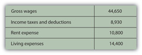She also had car payments of $2,400 and student loan payments of $7,720. Each loan payment actually covers the interest expense and partial repayment of the loan. The interest is an expense representing the cost of borrowing, and thus of having, the car and the education. The repayment of the loan is not an expense, however, but is just giving back something that was borrowed. In this case, the loan payments break down as follows (Figure 3.4 "Alice’s Loan Payments (Annually)").
Figure 3.4 Alice’s Loan Payments (Annually)
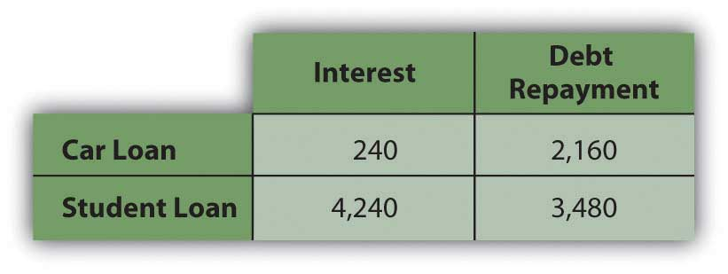Breaking down Alice’s living expenses in more detail and adding in her interest expenses, Alice’s income statement would look like this (Figure 3.5 "Alice’s Income Statement for the Year 2009").
Figure 3.5 Alice’s Income Statement for the Year 2009

Alice’s disposable incomeIncome available for expenses after tax expense has been deducted; gross income less income tax., or income to meet expenses after taxes have been accounted for, is $35,720. Alice’s net ncome, or net earnings or personal profit, is the remaining income after all other expenses have been deducted, in this case $6,040.
Now Alice has a much clearer view of what’s going on in her financial life. She can see, for example, that living expenses take the biggest bite out of her income and that rent is the biggest single expense. If she wanted to decrease expenses, finding a place to live with a cheaper rent will make the most impact on her bottom line. Or perhaps it would make more sense to make many small changes rather than one large change, to cut back on several other expenses. She could begin by cutting back on the expense items that she feels are least necessary or that she could most easily live without. Perhaps she could do with less entertainment or clothing or travel, for example. Whatever choices she subsequently made would be reflected in her income statement. The value of the income statement is in presenting income and expenses in detail for a particular period of time.
The cash flow statementA summary of actual cash flows for a period, detailing the sources and uses of cash and classifying them as from operating, investing, or financing activities. shows how much cash came in and where it came from, and how much cash went out and where it went over a period of time. This differs from the income statement because it may include cash flows that are not from income and expenses. Examples of such cash flows would be receiving repayment of money that you loaned, repaying money that you borrowed, or using money in exchanges such as buying or selling an asset.
The cash flow statement is important because it can show how well you do at creating liquidity, as well as your net income. Liquidity is nearness to cash, and liquidity has value. An excess of liquidity can be sold or lent, creating additional income. A lack of liquidity must be addressed by buying it or borrowing, creating additional expense.
Looking at Alice’s situation, she has two loan repayments that are not expenses and so are not included on her income statement. These payments reduce her liquidity, however, making it harder for her to create excess cash. Her cash flow statement looks like this (Figure 3.6 "Alice’s Cash Flow Statement for the Year 2009").
Figure 3.6 Alice’s Cash Flow Statement for the Year 2009
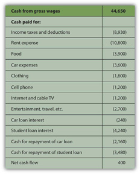Note: On a cash flow statement, negative and positive numbers indicate direction of flow. A negative number is cash flowing out, and a positive number is cash flowing in. Conventionally, negative numbers are in parentheses.
As with the income statement, the cash flow statement is more useful if there are subtotals for the different kinds of cash flows, as defined by their sources and uses. The cash flows from income and expenses are operating cash flowsRecurring cash flows that result from income and expense events., or cash flows that are a consequence of earning income or paying for the costs of earning income. The loan repayments are cash flows from financingNonrecurring cash flows that result from the borrowing or repayment of debt, or from the issue or repurchase of equity. assets or investments that will increase income. In this case, cash flows from financing include repayments on the car and the education. Although Alice doesn’t have any in this example, there could also be cash flows from investingNonrecurring cash flows that result from buying or selling assets., from buying or selling assets. Free cash flowIncome remaining after the deduction of living expenses and debt obligations that is available for capital expenditures or investment. is the cash available to make investments or financing decisions after taking care of operations and debt obligations. It is calculated as cash flow from operations less debt repayments.
The most significant difference between the three categories of cash flows—operating, investing, or financing—is whether or not the cash flows may be expected to recur regularly. Operating cash flows recur regularly; they are the cash flows that result from income and expenses or consumption and therefore can be expected to occur in every year. Operating cash flows may be different amounts in different periods, but they will happen in every period. Investing and financing cash flows, on the other hand, may or may not recur and often are unusual events. Typically, for example, you would not borrow or lend or buy or sell assets in every year. Here is how Alice’s cash flows would be classified (Figure 3.7 "Alice’s Cash Flow Statement for the Year 2009").
Figure 3.7 Alice’s Cash Flow Statement for the Year 2009
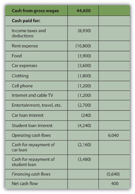This cash flow statement more clearly shows how liquidity is created and where liquidity could be increased. If Alice wanted to create more liquidity, it is obvious that eliminating those loan payments would be a big help: without them, her net cash flow would increase by more than 3,900 percent.
In business or in personal finance, a critical piece in assessing the current situation is the balance sheet. Often referred to as the “statement of financial condition,” the balance sheetA list of all assets, liabilities, and equity or net worth, at a given point in time, providing a concise picture of financial condition at that time. is a snapshot of what you have and what you owe at a given point in time. Unlike the income or cash flow statements, it is not a record of performance over a period of time, but simply a statement of where things stand at a certain moment.
The balance sheet is a list of assets, debts or liabilities, and equity or net worth, with their values. In business, assets are resources that can be used to create income, while debt and equity are the capital that financed those assets. Thus, the value of the assets must equal the value of the debt and the equity. In other words, the value of the business’s resources must equal the value of the capital it borrowed or bought in order to get those resources.
assets = liabilities + equityIn business, the accounting equationAssets = liabilities + equity, or the value of assets must be equal to the value of the debt and equity that financed them. In personal finance, assets = debts + net worth, or net worth = assets − debts. is as absolute as the law of gravity. It simply must always be true, because if there are assets, they must have been financed somehow—either through debt or equity. The value of that debt and equity financing must equal or balance the value of the assets it bought. Thus, it is called the “balance” sheet because it always balances the debt and equity with the value of the assets.
In personal finance, assets are also things that can be sold to create liquidity. Liquidity is needed to satisfy or repay debts. Because your assets are what you use to satisfy your debts when they become due, the assets’ value should be greater than the value of your debts. That is, you should have more to work with to meet your obligations than you owe.
The difference between what you have and what you owe is your net worthThe value of assets owned after creditors’ claims (debts) are accounted for, or literally, assets − debts.. Literally, net worth is the share that you own of everything that you have. It is the value of what you have net of (less) what you owe to others. Whatever asset value is left over after you meet your debt obligations is your own worth. It is the value of what you have that you can claim free and clear.
assets − debt = net worthYour net worth is really your equity or financial ownership in your own life. Here, too, the personal balance sheet must balance, because if
assets − debts = net worth,then it should also be
assets = debts + net worth.Alice could write a simple balance sheet to see her current financial condition. She has two assets (her car and her savings account), and she has two debts (her car and student loans) (Figure 3.8 "Alice’s Balance Sheet, December 31, 2009").
Figure 3.8 Alice’s Balance Sheet, December 31, 2009
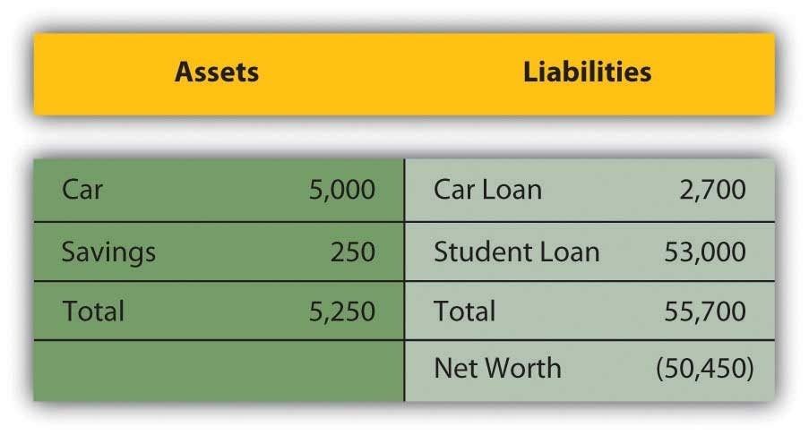Alice’s balance sheet presents her with a much clearer picture of her financial situation, but also with a dismaying prospect: she seems to have negative net worth. Negative net worthThe mathematical result of liabilities being greater than the value of assets, or debts being larger than the value that can be used to meet them. results whenever the value of debts or liabilities is actually greater than the assets’ value. If
Negative net worth implies that the assets don’t have enough value to satisfy the debts. Since debts are obligations, this would cause some concern.
In business, when liabilities are greater than the assets to meet them, the business has negative equity and is literally bankrupt. In that case, it may go out of business, selling all its assets and giving whatever it can to its creditorsLenders; anyone to whom debt is owed. or lenders, who will have to settle for less than what they are owed. More usually, the business continues to operate in bankruptcy, if possible, and must still repay its creditors, although perhaps under somewhat easier terms. Creditors (and the laws) allow these terms because creditors would rather get paid in full later than get paid less now or not at all.
In personal finance, personal bankruptcyAn economic situation when the value of debts is greater than the value of the assets that can be used to satisfy them. Formal bankruptcy is also a legal process aiming to compensate creditors, governed by the laws of the nation or state in which it occurs. may occur when debts are greater than the value of assets. But because creditors would rather be paid eventually than never, the bankrupt is usually allowed to continue to earn income in the hopes of repaying the debt later or with easier terms. Often, the bankrupt is forced to liquidate (sell) some or all of its assets.
Because debt is a legal as well as an economic obligation, there are laws governing bankruptcies that differ from state to state in the United States and from country to country. Although debt forgiveness was discussed in the Old Testament, throughout history it was not uncommon for bankrupts in many cultures to be put to death, maimed, enslaved, or imprisoned.BankruptcyData.com, http://www.bankruptcydata.com/Ch11History.htm (accessed January 19, 2009). The use of another’s property or wealth is a serious responsibility, so debt is a serious obligation.
However, Alice’s case is actually not as dismal as it looks, because Alice has an “asset” that is not listed on her balance sheet, that is, her education. It is not listed on her balance sheet because the value of her education, like the value of any asset, comes from how useful it is, and its usefulness has not happened yet, but will happen over her lifetime. It will happen in her future, based on how she chooses to use her education to increase her income and wealth. It is difficult to assign a monetary value to her education now. Alice knows what she paid for her education, but, sensibly, its real value is not its cost but its potential return, or what it can earn for her as she puts it to use in the future.
Current studies show that a college education has economic value, because a college graduate earns more over a lifetime than a high school graduate. Recent estimates put that difference at about $1,000,000.Sandy Baum and Jennifer Ma, “Education Pays: The Benefits of Higher Education for Individuals and Society” (Princeton, NJ: The College Board, 2007). So, if Alice assumes that her education will be worth $1,000,000 in extra income over her lifetime, and she includes that asset value on her balance sheet, then it would look more like this (Figure 3.10 "Alice’s Balance Sheet (revised), December 31, 2009"):
Figure 3.10 Alice’s Balance Sheet (revised), December 31, 2009

This looks much better, but it’s not sound accounting practice to include an asset—and its value—on the balance sheet before it really exists. After all, education generally pays off, but until it does, it hasn’t yet and there is a chance, however slim, that it won’t for Alice. A balance sheet is a snapshot of one’s financial situation at one particular time. At this particular time, Alice’s education has value, but its amount is unknown.
It is easy to see, however, that the only thing that creates negative net worth for Alice is her student loan. The student loan causes her liabilities to be greater than her assets—and if that were paid off, her net worth would be positive. Given that Alice is just starting her adult earning years, her situation seems quite reasonable.
Financial statements are valuable summaries of financial activities because they can organize information and make it easier and clearer to see and therefore to understand. Each one—the income statement, cash flow statement, and balance sheet—conveys a different aspect of the financial picture; put together, the picture is pretty complete. The three provide a summary of earning and expenses, of cash flows, and of assets and debts.
Since the three statements offer three different kinds of information, sometimes it is useful to look at each in the context of the others, and to look at specific items in the larger context. This is the purpose of financial statement analysis: creating comparisons and contexts to gain a better understanding of the financial picture.
On common-size statementsFinancial statements where each item’s value is listed as a percentage of or in relation to another value., each item’s value is listed as a percentage of another. This compares items, showing their relative size and their relative significance (see Figure 3.11 "Common Common-Size Statements"). On the income statement, each income and expense may be listed as a percentage of the total income. This shows the contribution of each kind of income to the total, and thus the diversification of income. It shows the burden of each expense on total income or how much income is needed to support each expense.
On the cash flow statement, each cash flow can be listed as a percentage of total positive cash flows, again showing the relative significance and diversification of the sources of cash, and the relative size of the burden of each use of cash.
On the balance sheet, each item is listed as a percentage of total assets, showing the relative significance and diversification of assets, and highlighting the use of debt as financing for the assets.
Figure 3.11 Common Common-Size Statements
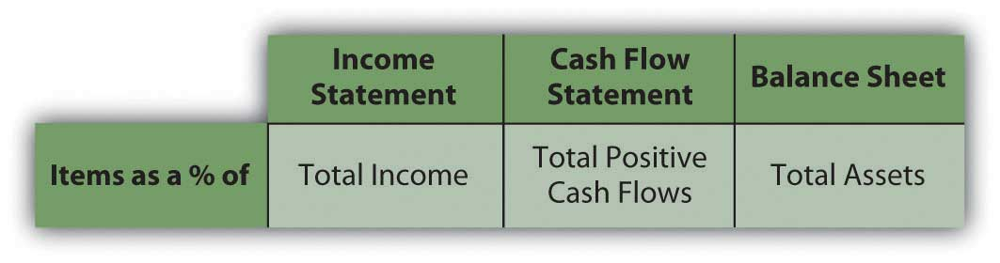Alice can look at a common-size income statementAn income statement that lists each kind of revenue and each expense as a percentage of total revenues. by looking at her expenses as a percentage of her income and comparing the size of each expense to a common denominator: her income. This shows her how much of her income, proportionately, is used up for each expense (Figure 3.12 "Alice’s Common-Size Income Statement for the Year 2009").
Figure 3.12 Alice’s Common-Size Income Statement for the Year 2009
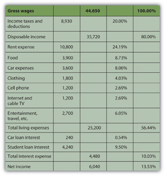Seeing the common-size statement as a pie chart makes the relative size of the slices even clearer (Figure 3.13 "Pie Chart of Alice’s Common-Size Income Statement for the Year 2009").
Figure 3.13 Pie Chart of Alice’s Common-Size Income Statement for the Year 2009
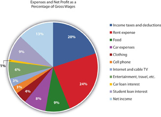The biggest discretionary use of Alice’s wages is her rent expense, followed by food, car expenses, and entertainment. Her income tax expense is a big use of her wages, but it is unavoidable or nondiscretionary. As Supreme Court Justice Oliver Wendell Holmes, Jr., said, “Taxes are what we pay for a civilized society.”U.S. Department of the Treasury, http://www.treas.gov/education/faq/taxes/taxes-society.shtml (accessed January 19, 2009). Ranking expenses by size offers interesting insight into lifestyle choices. It is also valuable in framing financial decisions, pointing out which expenses have the largest impact on income and thus on the resources for making financial decisions. If Alice wanted more discretionary income to make more or different choices, she can easily see that reducing rent expense would have the most impact on freeing up some of her wages for another use.
Looking at Alice’s negative cash flows as percentages of her positive cash flow (on the cash flow statement), or the uses of cash as percentages of the sources of cash, creates the common-size cash flowsA cash flow statement that lists each cash flow as a percentage of total positive cash flows.. As with the income statement, this gives Alice a clearer and more immediate view of the largest uses of her cash (Figure 3.14 "Alice’s Common-Size Cash Flow Statement for the Year 2009" and Figure 3.15 "Pie Chart of Alice’s Common-Size Cash Flow Statement").
Figure 3.14 Alice’s Common-Size Cash Flow Statement for the Year 2009
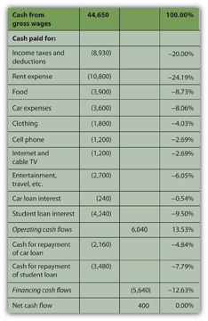Figure 3.15 Pie Chart of Alice’s Common-Size Cash Flow Statement

Again, rent is the biggest discretionary use of cash for living expenses, but debts demand the most significant portion of cash flows. Repayments and interest together are 30 percent of Alice’s cash—as much as she pays for rent and food. Eliminating those debt payments would create substantial liquidity for Alice.
On the balance sheet, looking at each item as a percentage of total assets allows for measuring how much of the assets’ value is obligated to cover each debt, or how much of the assets’ value is claimed by each debt (Figure 3.16 "Alice’s Common-Size Balance Sheet, December 31, 2009").
Figure 3.16 Alice’s Common-Size Balance Sheet, December 31, 2009

This common-size balance sheetA balance sheet that lists each asset, liability, and equity as a percentage of total assets. allows “over-sized” items to be more obvious. For example, it is immediately obvious that Alice’s student loan dwarfs her assets’ value and creates her negative net worth.
Common-size statements allow you to look at the size of each item relative to a common denominator: total income on the income statement, total positive cash flow on the cash flow statement, or total assets on the balance sheet. The relative size of the items helps you spot anything that seems disproportionately large or small. The common-size analysis is also useful for comparing the diversification of items on the financial statement—the diversification of incomes on the income statement, cash flows on the cash flow statement, and assets and liabilities on the balance sheet. Diversification reduces risk, so you want to diversify the sources of income and assets you can use to create value (Figure 3.17 "Pie Chart of Alice’s Common-Size Balance Sheet: The Assets").
Figure 3.17 Pie Chart of Alice’s Common-Size Balance Sheet: The Assets
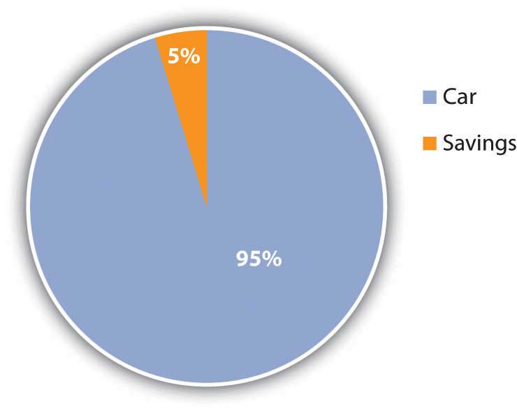For example, Alice has only two assets, and one—her car—provides 95 percent of her assets’ value. If something happened to her car, her assets would lose 95 percent of their value. Her asset value would be less exposed to risk if she had asset value from other assets to diversify the value invested in her car.
Likewise, both her income and her positive cash flows come from only one source, her paycheck. Because her positive net earnings and positive net cash flows depend on this one source, she is exposed to risk, which she could decrease by diversifying her sources of income. She could diversify by adding earned income—taking on a second job, for example—or by creating investment income. In order to create investment income, however, she needs to have a surplus of liquidity, or cash, to invest. Alice has run head first into Adam Smith’s “great difficulty”Adam Smith, The Wealth of Nations (New York: The Modern Library, 2000), Book I, Chapter ix. (that it takes some money to make money; see Chapter 2 "Basic Ideas of Finance").
Common-size statements put the details of the financial statements in clear relief relative to a common factor for each statement, but each financial statement is also related to the others. Each is a piece of a larger picture, and as important as it is to see each piece, it is also important to see that larger picture. To make sound financial decisions, you need to be able to foresee the consequences of a decision, to understand how a decision may affect the different aspects of the bigger picture.
For example, what happens in the income statement and cash flow statements is reflected on the balance sheet because the earnings and expenses and the other cash flows affect the asset values, and the values of debts, and thus the net worth. Cash may be used to purchase assets, so a negative cash flow may increase assets. Cash may be used to pay off debt, so a negative cash flow may decrease liabilities. Cash may be received when an asset is sold, so a decrease to assets may create positive cash flow. Cash may be received when money is borrowed, so an increase in liabilities may create a positive cash flow.
There are many other possible scenarios and transactions, but you can begin to see that the balance sheet at the end of a period is changed from what it was at the beginning of the period by what happens during the period, and what happens during the period is shown on the income statement and the cash flow statement. So, as shown in the figure, the income statement and cash flow information, related to each other, also relate the balance sheet at the end of the period to the balance sheet at the beginning of the period (Figure 3.18 "Relationships Among Financial Statements").
Figure 3.18 Relationships Among Financial Statements

The significance of these relationships becomes even more important when evaluating alternatives for financial decisions. When you understand how the statements are related, you can use that understanding to project the effects of your choices on different aspects of your financial reality and see the consequences of your decisions.
Creating ratios is another way to see the numbers in relation to each other. Any ratio shows the relative size of the two items compared, just as a fraction compares the numerator to the denominator or a percentage compares a part to the whole. The percentages on the common-size statements are ratios, although they only compare items within a financial statement. Ratio analysis is used to make comparisons across statements. For example, you can see how much debt you have just by looking at your total liabilities, but how can you tell if you can afford the debt you have? That depends on the income you have to meet your interest and repayment obligations, or the assets you could use (sell) to meet those obligations. Ratio analysisA way of comparing amounts by creating ratios or fractions that compare the amount in the numerator to the amount in the denominator. can give you the answer.
The financial ratiosRatios used to understand financial statement amounts relative to each other. you use depend on the perspective you need or the question(s) you need answered. Some of the more common ratios (and questions) are presented in the following chart (Figure 3.19 "Common Personal Financial Ratios").
Figure 3.19 Common Personal Financial Ratios

These ratios all get “better” or show improvement as they get bigger, with two exceptions: debt to assets and total debt. Those two ratios measure levels of debt, and the smaller the ratio, the less the debt. Ideally, the two debt ratios would be less than one. If your debt-to-assets ratio is greater than one, then debt is greater than assets, and you are bankrupt. If the total debt ratio is greater than one, then debt is greater than net worth, and you “own” less of your assets’ value than your creditors do.
Some ratios will naturally be less than one, but the bigger they are, the better. For example, net income margin will always be less than one because net income will always be less than total income (net income = total income − expenses). The larger that ratio is and the fewer expenses that are taken away from the total income, the better.
Some ratios should be greater than one, and the bigger they are, the better. For example, the interest coverage ratio should be greater than one, because you should have more income to cover interest expenses than you have interest expenses, and the more you have, the better. Figure 3.20 "Results of Ratio Analysis" suggests what to look for in the results of your ratio analyses.
Figure 3.20 Results of Ratio Analysis
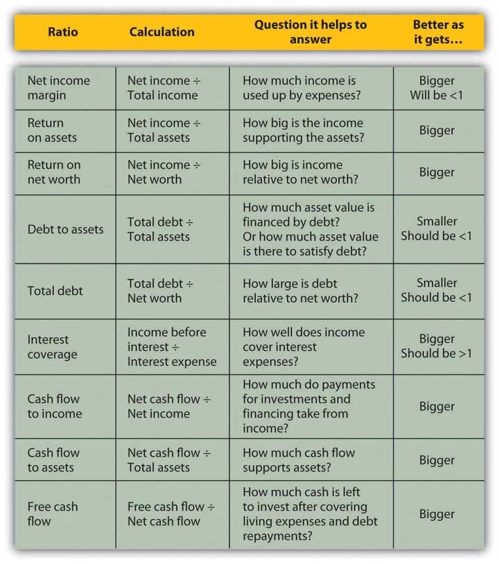While you may have a pretty good “feel” for your situation just by paying the bills and living your life, it so often helps to have the numbers in front of you. Here is Alice’s ratio analysis for 2009 (Figure 3.21 "Alice’s Ratio Analysis, 2009").
Figure 3.21 Alice’s Ratio Analysis, 2009
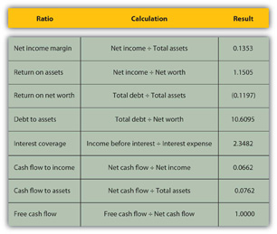The ratios that involve net worth—return-on-net-worth and total debt—are negative for Alice, because she has negative net worth, as her debts are larger than her assets. She can see how much larger her debt is than her assets by looking at her debt-to-assets ratio. Although she has a lot of debt (relative to assets and to net worth), she can earn enough income to cover its cost or interest expense, as shown by the interest coverage ratio.
Alice is earning well. Her income is larger than her assets. She is able to live efficiently. Her net income is a healthy 13.53 percent of her total income (net income margin), which means that her expenses are only 86.47 percent of it, but her cash flows are much less (cash flow to income), meaning that a significant portion of earnings is used up in making investments or, in Alice’s case, debt repayments. In fact, her debt repayments don’t leave her with much free cash flow; that is, cash flow not used up on living expenses or debts.
Looking at the ratios, it is even more apparent how much—and how subtle—a burden Alice’s debt is. In addition to giving her negative net worth, it keeps her from increasing her assets and creating positive net worth—and potentially more income—by obligating her to use up her cash flows. Debt repayment keeps her from being able to invest.
Currently, Alice can afford the interest and the repayments. Her debt does not keep her from living her life, but it does limit her choices, which in turn restricts her decisions and future possibilities.
Another useful way to compare financial statements is to look at how the situation has changed over time. Comparisons over time provide insights into the effects of past financial decisions and changes in circumstance. That insight can guide you in making future financial decisions, particularly in foreseeing the potential costs or benefits of a choice. Looking backward can be very helpful in looking forward.
Fast-forward ten years: Alice is now in her early thirties. Her career has progressed, and her income has grown. She has paid off her student loan and has begun to save for retirement and perhaps a down payment on a house.
A comparison of Alice’s financial statements shows the change over the decade, both in absolute dollar amounts and as a percentage (see Figure 3.22 "Alice’s Income Statements: Comparison Over Time", Figure 3.23 "Alice’s Cash Flow Statements: Comparison Over Time", and Figure 3.24 "Alice’s Balance Sheets: Comparison Over Time"). For the sake of simplicity, this example assumes that neither inflation nor deflation have significantly affected currency values during this period.
Figure 3.22 Alice’s Income Statements: Comparison Over Time
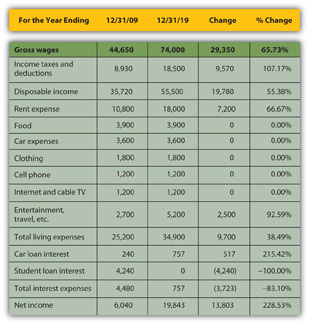Figure 3.23 Alice’s Cash Flow Statements: Comparison Over Time
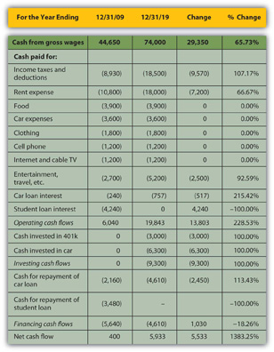Figure 3.24 Alice’s Balance Sheets: Comparison Over Time

Starting with the income statement, Alice’s income has increased. Her income tax withholding and deductions have also increased, but she still has higher disposable income (take-home pay). Many of her living expenses have remained consistent; rent and entertainment have increased. Interest expense on her car loan has increased, but since she has paid off her student loan, that interest expense has been eliminated, so her total interest expense has decreased. Overall, her net income, or personal profit, what she clears after covering her living expenses, has almost doubled.
Her cash flows have also improved. Operating cash flows, like net income, have almost doubled—due primarily to eliminating the student loan interest payment. The improved cash flow allowed her to make a down payment on a new car, invest in her 401(k), make the payments on her car loan, and still increase her net cash flow by a factor of ten.
Alice’s balance sheet is most telling about the changes in her life, especially her now positive net worth. She has more assets. She has begun saving for retirement and has more liquidity, distributed in her checking, savings, and money market accounts. Since she has less debt, having paid off her student loan, she now has positive net worth.
Comparing the relative results of the common-size statements provides an even deeper view of the relative changes in Alice’s situation (Figure 3.25 "Comparing Alice’s Common-Size Statements for 2009 and 2019: Income Statements", Figure 3.26 "Comparing Alice’s Common-Size Statements for 2009 and 2019: Cash Flow Statements", and Figure 3.27 "Comparing Alice’s Common-Size Statements for 2009 and 2019: Balance Sheets").
Figure 3.25 Comparing Alice’s Common-Size Statements for 2009 and 2019: Income Statements

Figure 3.26 Comparing Alice’s Common-Size Statements for 2009 and 2019: Cash Flow Statements
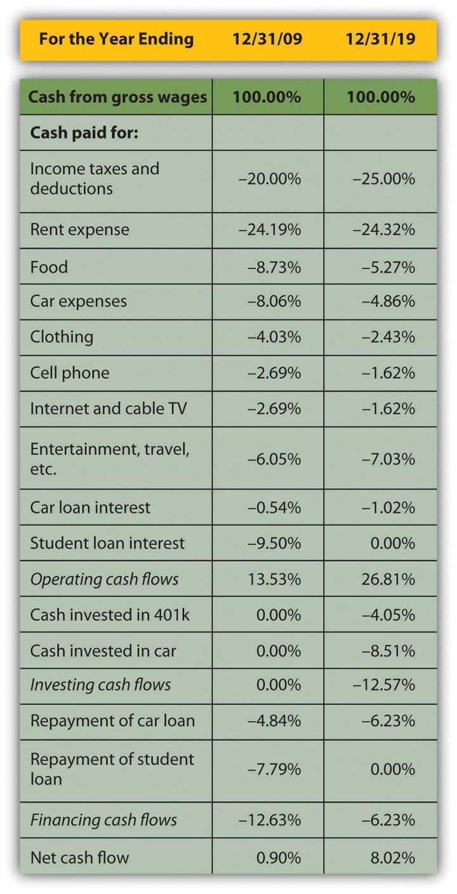Figure 3.27 Comparing Alice’s Common-Size Statements for 2009 and 2019: Balance Sheets
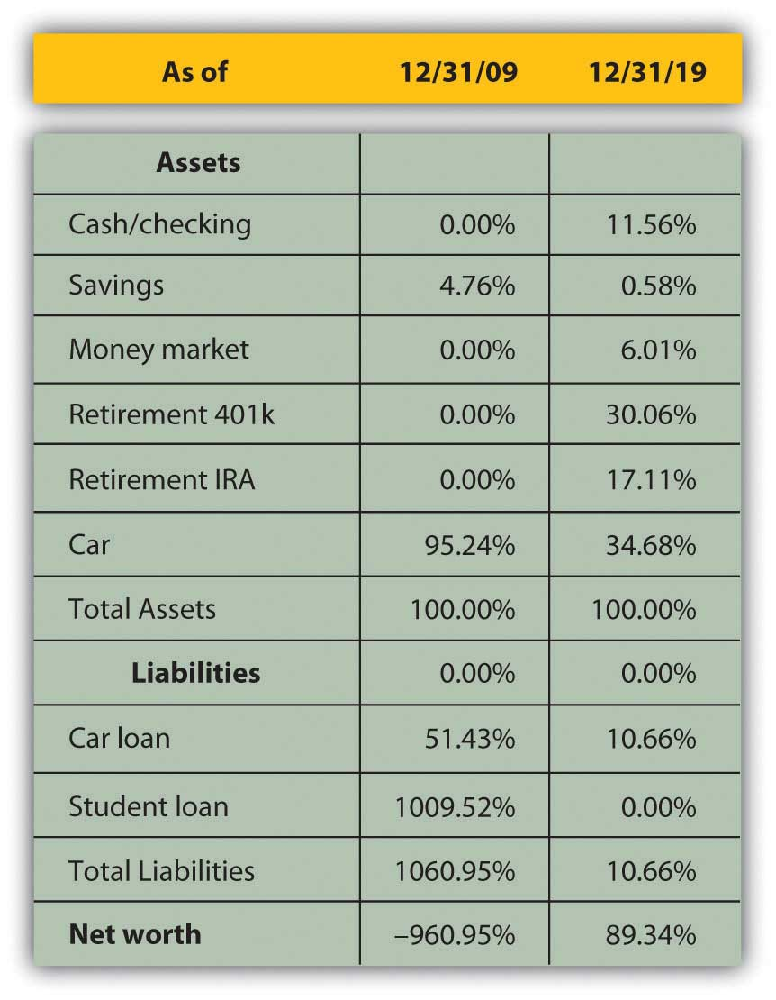Although income taxes and rent have increased as a percentage of income, living expenses have declined, showing real progress for Alice in raising her standard of living: it now costs her less of her income to sustain herself. Interest expense has decreased substantially as a portion of income, resulting in a net income or personal profit that is not only larger, but is larger relative to income. More of her income is profit, left for other discretionary uses.
The change in operating cash flows confirms this. Although her investing activities now represent a significant use of cash, her need to use cash in financing activities—debt repayment—is so much less that her net cash flow has increased substantially. The cash that used to have to go toward supporting debt obligations now goes toward building an asset base, some of which (the 401(k)) may provide income in the future.
Changes in the balance sheet show a much more diversified and therefore much less risky asset base. Although almost half of Alice’s assets are restricted for a specific purpose, such as her 401(k) and Individual Retirement Account (IRA) accounts, she still has significantly more liquidity and more liquid assets. Debt has fallen from ten times the assets’ value to one-tenth of it, creating some ownership for Alice.
Finally, Alice can compare her ratios over time (Figure 3.28 "Ratio Analysis Comparison").
Figure 3.28 Ratio Analysis Comparison

Most immediately, her net worth is now positive, and so are the return-on-net-worth and the total debt ratios. As her debt has become less significant, her ability to afford it has improved (to pay for its interest and repayment). Both her interest coverage and free cash flow ratios show large increases. Since her net income margin (and income) has grown, the only reason her return-on-asset ratio has decreased is because her assets have grown even faster than her income.
By analyzing over time, you can spot trends that may be happening too slowly or too subtly for you to notice in daily living, but which may become significant over time. You would want to keep a closer eye on your finances than Alice does, however, and review your situation at least every year.
Many software products are available to help you organize your financial information to be more useful in making financial decisions. They are designed to make the record-keeping aspects of personal finance—the collection, classification, and sorting of financial data—as easy as possible. The programs also are designed to produce summary reports (e.g., income statements, cash flow statements, and balance sheets) as well as many calculations that may be useful for various aspects of financial planning. For example, financial planning software exists for managing education and retirement savings, debt and mortgage repayment, and income and expense budgeting.
Most programs have designed their data input to look like a checkbook, which is what most people use to keep personal financial records. This type of user interface is intended to be recognizable and familiar, similar to the manual record keeping that you already do.
When you input your checkbook data into the program, the software does the bookkeeping—creating the journals, ledgers, adjustments, and trial balances that generations of people have done, albeit more tediously, with parchment and quill or with ledger paper and pencil. Most personal financial transactions happen as cash flows through a checking account, so the checkbook becomes the primary source of data.
More and more, personal transactions are done by electronic transfer; that is, no paper changes hands, but cash still flows to and from an account, usually a checking account.
Data for other transactions, such as income from investments or changes in investment value, are usually received from periodic statements issued by investment managers, such as banks where you have savings accounts; brokers or mutual fund companies that manage investments; or employers’ retirement account statements.
Most versions of personal financial software allow you to download account information directly from the source—your bank, broker, or employer—which saves you from manually entering the data into the program. Aside from providing convenience, downloading directly should eliminate human error in transferring the data.
All personal financial software produces the essential summary reports—the income statement, cash flow statement, and balance sheet—that show the results of financial activity for the period. Most will also report more specific aspects of activities, such as listing all transactions for a particular income or expense.
Most will provide separate reports on activities that have some tax consequence, since users always need to be aware of tax obligations and the tax consequences of financial decisions. Some programs, especially those produced by companies that also sell tax software, allow you to export data from your financial software to your tax program, which makes tax preparation—or at least tax record keeping—easier. In some programs, you need to know which activities are taxable and flag them as such. Some programs recognize that information already, while others may still prompt you for tax information.
All programs allow you to play “what if”: a marvelous feature of computing power and the virtual world in general and certainly helpful when it comes to making financial decisions. All programs include a budgeting feature that allows you to foresee or project possible scenarios and gauge your ability to live with them. This feature is particularly useful when budgeting for income and living expenses. (Budgeting is discussed more thoroughly in Chapter 5 "Financial Plans: Budgets".) Most programs have features that allow you to project the results of savings plans for education or retirement. None can dictate the future, or allow you to, but they can certainly help you to have a better view.
All programs are designed to be installed on a personal computer or a handheld device such as a Personal Digital Assistant (PDA) or smart phone, but some can also be run from a Web site and therefore do not require a download. Product and service providers are very concerned with security.
As with all Internet transactions, you should be aware that the more your data is transferred, downloaded, or exported over the Internet, the more exposed it is to theft. Personal financial data theft is a serious and growing problem worldwide, and security systems are hard pressed to keep up with the ingenuity of hackers. The convenience gained by having your bank, brokerage, tax preparer, and so on accessible to you (and your data accessible to them) or your data accessible to you wherever you are must be weighed against the increased exposure to data theft. As always, the potential benefit should be considered against the costs.
Keeping digital records of your finances may be more secure than keeping them scattered in shoeboxes or files, exposed to risks such as fire, flood, and theft. Digital records are often easily retrievable because the software organizes them systematically for you. Space is not a practical issue with digital storage, so records may be kept longer. As with anything digital, however, you must be diligent about backing up your data, although many programs will do that automatically or regularly prompt you to do so. Hard copy records must be disposed of periodically, and judging how long to keep them is always difficult. Throwing them in the trash may be risky because of “dumpster diving,” a well-known method of identity theft, so documents with financial information should always be shredded before disposal.
Personal financial software is usually quite reasonably priced, with many programs selling for less than $50, and most for less than $100. Buying the software usually costs less than buying an hour of accounting expertise from an accountant or financial planner. While software cannot replace financial planning professionals who provide valuable judgment, it can allow you to hire them only for their judgment and not have to pay them to collect, classify, sort, and report your financial data.
Software will not improve your financial situation, but it can improve the organization of your financial data monthly and yearly, allowing you a much clearer view and almost certainly a much better understanding of your situation.
About.com offers general information
http://financialsoft.about.com/od/softwaretitle1/u/Get_Started_Financial_Software.htm
Helpful software reviews
Personal financial software favorites priced under $50 include
(as listed on http://personal-finance-software-review.toptenreviews.com/)
To help you better evaluate your choices, personal finance software provides calculations for projecting information such as the following:
View these videos online and discuss with classmates your answers to the questions that follow.